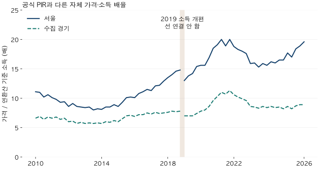
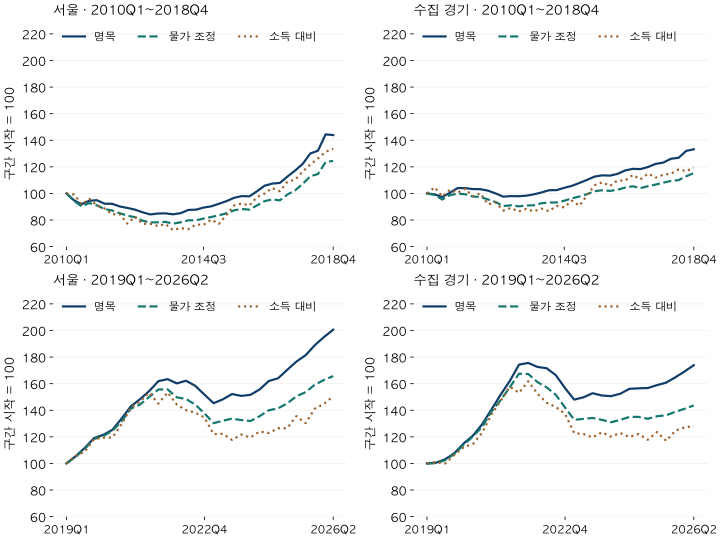

첫 집의 예산 · 소득 대비 가격
PIR 추이 읽기: 서울·경기 집값과 소득의 2010~2026년 비교
2010~2026년 서울·수집 경기의 소득 대비 모형가격을 비교합니다. 2019년 소득조사 개편, 물가 조정과의 차이, 같은 단지 비교 및 추정의 한계를 함께 확인하세요.
분석 기간 · 2010년 1분기~2026년 2분기 · 서울·수집 경기 | 자료 기준일 · 2026-10-04
집값이 소득보다 빨리 올랐는지를 보려면 가격뿐 아니라 어느 가구의 소득을 썼는지도 확인해야 합니다. 2019년 1분기부터 2026년 2분기까지 이 글의 소득 대비 모형가격은 서울에서 50.5%, 수집 경기 지역에서 28.1% 높아졌습니다. 양끝에서 같은 단지만 비교하면 상승 폭은 각각 40.1%, 19.7%로 낮아집니다. 이 수치는 공식 KB PIR이나 실제 가구의 상환 부담이 아닙니다.
- 2010년 이후 전체 흐름을 보여주되, 소득조사가 바뀐 2019년 전후를 연결하지 않습니다.
- 물가로 나눈 가격과 소득으로 나눈 가격은 서로 다른 질문에 답합니다.
- 같은 단지를 남겨도 두 구간에서 소득 대비 가격은 높아졌지만, 구성 변화에 따라 상승 폭이 달라집니다.
- 현재 측정 세대수와 모형가격을 쓴 결과입니다. 주의가 필요한 추정도 포함했으며 개인의 구매 가능액을 뜻하지 않습니다.
PIR의 분모는 누구의 소득일까요?
PIR은 주택가격을 연간 소득으로 나눈 배율입니다. 같은 이름이라도 가격의 대상, 평균·중위값, 소득 가구의 범위에 따라 값이 달라질 수 있습니다. 대출받은 차주의 소득과 지역의 기준 가구 소득도 서로 바꿔 쓸 수 없습니다.
이 글은 현재 측정한 면적별 세대수로 가중한 아파트 모형가격을 KB 주택구입잠재력지수(HOI)의 지역별 기준 월소득으로 나눕니다. 공식 화면은 소득의 바탕을 도시 근로자 가구 3분위로 설명합니다. 지역 주민 전체의 실제 중위 소득이라고 해석하지 않습니다. 월소득을 12배 해 연환산하며, 분기별 소득 네 개를 더하지 않습니다.
자체 소득 대비 가격 배율 = 세대수 가중 모형가격 ÷ (기준 월소득 × 12)
가격은 서울 25개 구와 수집 경기 36개 시군구를 각각 합쳤습니다. 경기의 가격 범위는 도 전체 소득 범위와 다릅니다. 같은 가구가 그 가격의 집을 샀다는 관측도 아닙니다. ‘배율 20’이라는 값을 생활비 없이 20년 저축하면 된다는 뜻으로 읽어서는 안 됩니다. 관련 가격 개념은 아파트 통계 용어 사전에서 확인할 수 있습니다.
2010년 이후 흐름을 왜 나눠 볼까요?
2019년부터 HOI에 새 가계동향조사 소득이 적용됐기 때문입니다. 2010~2018년과 2019~2026년은 각각 안에서 비교합니다. 두 구간을 이어 16년 전체 상승률이나 전체 최고 부담 시점을 계산하지 않습니다. 경계에서 배율이 낮아져도 그 차이를 곧바로 구매력 개선이라고 부를 수 없습니다.

| 지역·분기 | 모형 가격 | 기준 월소득 | 가격/연환산 소득 | 알려진 재고 포함률 | 가격 확보 세대 중 주의 비중 |
|---|---|---|---|---|---|
| 서울 2010Q1 | 5.6 | 422.43 | 11.1 | 71% | 89% |
| 서울 2018Q4 | 8.1 | 454.88 | 14.8 | 89% | 46% |
| 서울 2019Q1 | 7.9 | 503.49 | 13.0 | 82% | 74% |
| 서울 2026Q2 | 15.8 | 671.14 | 19.6 | 95% | 56% |
| 수집 경기 2010Q1 | 2.9 | 369.87 | 6.6 | 76% | 72% |
| 수집 경기 2018Q4 | 3.9 | 413.06 | 7.8 | 92% | 30% |
| 수집 경기 2019Q1 | 3.8 | 457.20 | 7.0 | 88% | 39% |
| 수집 경기 2026Q2 | 6.7 | 620.46 | 8.9 | 98% | 35% |
2026년 2분기 자체 배율은 서울 19.6배, 수집 경기 8.9배입니다. 서울은 가격 약 15.8억 원과 월소득 약 671만 원, 수집 경기는 약 6.7억 원과 약 620만 원을 조합한 값입니다. 이는 모든 면적을 합친 평균 모형가격이며, 특정 면적의 거래 중앙값이나 매물 가격이 아닙니다. 표의 값은 각각 반올림해 표시했으므로 표시 금액만 나누면 배율과 조금 다를 수 있습니다.
가격이 연결된 세대의 비중도 달라졌습니다. 서울은 2010년 1분기 약 71%에서 2026년 2분기 약 95%로 높아졌습니다. 이 분모는 면적별 세대수를 아는 현재 재고에서 당시 준공 전인 단지를 뺀 것입니다. 당시 서울 전체 주택을 빠짐없이 측정했다는 뜻은 아닙니다.
물가와 소득으로 나누면 무엇이 달라질까요?
명목 가격은 돈의 액수, 물가 조정 가격은 일반 소비재 구매력, 소득 대비 가격은 기준 가구 소득에 견준 크기를 보여줍니다. CPI와 소득을 한꺼번에 분모에 넣지 않습니다. 아래 세 선은 각 구간의 같은 시작점을 100으로 맞췄습니다.

| 지역·기간 | 명목 가격 | 물가 조정 가격 | 기준 소득 | 소득 대비 가격 |
|---|---|---|---|---|
| 서울 2010Q1→2018Q4 | +43.9% | +24.5% | +7.7% | +33.6% |
| 서울 2019Q1→2026Q2 | +100.6% | +65.7% | +33.3% | +50.5% |
| 수집 경기 2010Q1→2018Q4 | +33.2% | +15.3% | +11.7% | +19.3% |
| 수집 경기 2019Q1→2026Q2 | +73.9% | +43.6% | +35.7% | +28.1% |
2019년 1분기 이후 서울의 명목 가격은 약 100.6% 높아졌습니다. 물가로 조정하면 65.7%, 소득으로 나누면 50.5%입니다. 이 기간 기준 소득 상승률 33.3%가 물가 상승률 21.1%보다 커서 소득으로 조정한 상승 폭이 더 작습니다. 같은 시기 수집 경기의 명목·물가 조정·소득 대비 상승률은 각각 73.9%·43.6%·28.1%입니다.
앞 구간의 소득 대비 상승은 서울 33.6%, 수집 경기 19.3%였습니다. 이는 2010년 1분기와 2018년 4분기를 비교한 값입니다. 뒤 구간과 기간 길이·소득 정의가 다르므로 어느 시대의 부담 증가가 더 심했다고 순위를 매기지 않습니다. 분기 소득의 계절성도 조정하지 않았으므로 짧은 출렁임을 구조적 변화로 단정하지 않습니다.
물가를 빼는 방법과 가격지수 자체의 차이는 물가를 뺀 아파트값의 흐름에서 더 자세히 설명합니다. 그 글의 지수와 이 글의 세대수 가중 평균은 가격 집계 방식이 다릅니다.
같은 단지에서도 같은 결과일까요?
두 구간의 양끝에서 모두 가격을 계산할 수 있는 같은 단지만 남겨도 소득 대비 가격은 높아졌습니다. 다만 상승 폭은 달라졌습니다. 특히 경기의 2010~2018년 비교는 전체 집계의 19.3%에서 같은 단지의 6.4%로 낮아집니다. 새로운 단지와 가격을 확보한 단지가 섞이는 효과를 무시하기 어렵습니다.
| 지역·기간 | 시점별 가격 확보 단지 | 양끝 동일 단지 | 동일 단지의 세대 비중: 시작 / 끝 |
|---|---|---|---|
| 서울 2010Q1→2018Q4 | +33.6% | +36.9% | 97% / 64% |
| 서울 2019Q1→2026Q2 | +50.5% | +40.1% | 99% / 77% |
| 수집 경기 2010Q1→2018Q4 | +19.3% | +6.4% | 99% / 60% |
| 수집 경기 2019Q1→2026Q2 | +28.1% | +19.7% | 100% / 77% |
‘같은 단지’는 각 구간의 시작과 끝에 같은 단지·같은 측정 세대수 가중치를 사용했다는 뜻입니다. 전체 66분기 내내 가격이 있는 단지 집합은 아닙니다. 비교 끝에 포함된 세대 중 공통 단지 비중이 낮아지면 전체 평균과의 차이도 살펴봐야 합니다. 이 비교도 모형의 오차나 같은 단지 안 개별 주택의 차이까지 없애지는 못합니다.
개인 예산에 적용하기 전에
모형가격의 주의 비중이 높다는 반론이 중요합니다. 이 분석은 유효한 가격을 가진 모든 구성 면적이 모인 단지를 포함합니다. 오래된 거래 근거, 초기 추정, 낮은 신뢰도, 다른 면적에서 가져온 정보가 있다고 가격을 빼지는 않았습니다. 그런 면적을 하나라도 포함한 단지를 ‘주의 단지’로 표시합니다.
2026년 2분기 가격을 확보한 세대 중 주의 단지에 속한 비중은 서울 약 56%, 수집 경기 약 35%입니다. 서울 2010년 1분기는 약 89%로 특히 높았습니다. 이 비중은 가격이 틀린 확률이 아니지만, 선을 정밀한 실현가격 이력으로 읽기 어렵다는 근거입니다. 결측과 낮은 품질은 서로 다른 문제입니다.
또한 기준 소득이 올라가도 내 소득은 그대로일 수 있습니다. 보유 현금, 기존 주택 처분액, 증여, 세금, 대출금리와 심사 조건은 이 배율에 들어 있지 않습니다. 관심 주택의 실제 제시 가격과 가구의 지속 가능한 소득·현금흐름을 별도로 적어 보세요. 지역 배율이 낮다는 이유만으로 매수 가능하거나 저평가됐다고 판단할 수 없습니다.
서울 66분기 전체 수치 보기
| 분기 | 가격: 억 원 | 월소득: 만 원 | 배율: 배 | 명목 지수 | 물가 조정 지수 | 소득 대비 지수 | 재고 포함률 | 주의 세대 비중 |
|---|---|---|---|---|---|---|---|---|
| 2010Q1 | 5.6 | 422.43 | 11.1 | 100.0 | 100.0 | 100.0 | 71% | 89% |
| 2010Q2 | 5.3 | 403.48 | 11.0 | 94.8 | 94.4 | 99.2 | 78% | 81% |
| 2010Q3 | 5.2 | 422.98 | 10.2 | 91.9 | 90.2 | 91.8 | 76% | 73% |
| 2010Q4 | 5.3 | 415.95 | 10.6 | 94.5 | 92.8 | 95.9 | 87% | 66% |
| 2011Q1 | 5.3 | 439.83 | 10.1 | 94.9 | 91.1 | 91.1 | 90% | 57% |
| 2011Q2 | 5.2 | 440.01 | 9.8 | 92.3 | 88.2 | 88.7 | 87% | 54% |
| 2011Q3 | 5.2 | 462.06 | 9.3 | 92.2 | 87.2 | 84.3 | 88% | 55% |
| 2011Q4 | 5.1 | 451.60 | 9.4 | 90.2 | 85.1 | 84.4 | 90% | 54% |
| 2012Q1 | 5.0 | 487.14 | 8.6 | 89.1 | 83.3 | 77.3 | 88% | 58% |
| 2012Q2 | 4.9 | 449.10 | 9.1 | 87.8 | 82.1 | 82.5 | 88% | 60% |
| 2012Q3 | 4.8 | 469.62 | 8.6 | 85.8 | 79.5 | 77.2 | 87% | 62% |
| 2012Q4 | 4.7 | 461.03 | 8.5 | 84.2 | 78.2 | 77.1 | 89% | 59% |
| 2013Q1 | 4.8 | 475.15 | 8.4 | 84.9 | 78.3 | 75.5 | 90% | 54% |
| 2013Q2 | 4.8 | 466.59 | 8.5 | 85.0 | 78.6 | 77.0 | 92% | 51% |
| 2013Q3 | 4.7 | 491.94 | 8.0 | 84.3 | 77.3 | 72.4 | 93% | 50% |
| 2013Q4 | 4.8 | 487.05 | 8.2 | 85.2 | 78.3 | 73.9 | 94% | 49% |
| 2014Q1 | 4.9 | 506.59 | 8.1 | 87.6 | 79.8 | 73.1 | 93% | 46% |
| 2014Q2 | 4.9 | 484.49 | 8.5 | 87.8 | 79.8 | 76.6 | 94% | 46% |
| 2014Q3 | 5.0 | 494.59 | 8.5 | 89.4 | 81.1 | 76.4 | 95% | 47% |
| 2014Q4 | 5.1 | 474.99 | 8.9 | 90.3 | 82.3 | 80.3 | 96% | 44% |
| 2015Q1 | 5.2 | 504.84 | 8.6 | 92.2 | 83.5 | 77.1 | 95% | 41% |
| 2015Q2 | 5.3 | 474.58 | 9.3 | 94.2 | 85.1 | 83.9 | 96% | 39% |
| 2015Q3 | 5.4 | 448.73 | 10.1 | 96.7 | 87.3 | 91.0 | 96% | 40% |
| 2015Q4 | 5.5 | 448.00 | 10.2 | 98.0 | 88.3 | 92.4 | 96% | 42% |
| 2016Q1 | 5.5 | 454.22 | 10.1 | 97.8 | 87.8 | 90.9 | 94% | 43% |
| 2016Q2 | 5.7 | 441.52 | 10.8 | 101.6 | 91.0 | 97.2 | 96% | 41% |
| 2016Q3 | 5.9 | 447.66 | 11.1 | 105.8 | 94.2 | 99.9 | 96% | 37% |
| 2016Q4 | 6.0 | 435.93 | 11.5 | 107.4 | 95.5 | 104.1 | 97% | 41% |
| 2017Q1 | 6.1 | 448.17 | 11.3 | 107.9 | 94.8 | 101.7 | 95% | 45% |
| 2017Q2 | 6.3 | 436.99 | 12.1 | 112.7 | 99.2 | 108.9 | 97% | 41% |
| 2017Q3 | 6.6 | 448.79 | 12.2 | 117.2 | 102.3 | 110.3 | 97% | 41% |
| 2017Q4 | 6.9 | 443.56 | 12.9 | 122.2 | 107.2 | 116.4 | 97% | 43% |
| 2018Q1 | 7.3 | 451.17 | 13.5 | 130.1 | 112.9 | 121.8 | 95% | 43% |
| 2018Q2 | 7.4 | 441.59 | 14.0 | 132.1 | 114.6 | 126.3 | 94% | 45% |
| 2018Q3 | 8.1 | 464.43 | 14.6 | 144.4 | 123.5 | 131.3 | 95% | 45% |
| 2018Q4 | 8.1 | 454.88 | 14.8 | 143.9 | 124.5 | 133.6 | 89% | 46% |
| 2019Q1 | 7.9 | 503.49 | 13.0 | 100.0 | 100.0 | 100.0 | 82% | 74% |
| 2019Q2 | 8.3 | 502.10 | 13.8 | 105.4 | 105.0 | 105.7 | 89% | 66% |
| 2019Q3 | 8.8 | 516.41 | 14.2 | 111.7 | 111.0 | 108.9 | 94% | 52% |
| 2019Q4 | 9.4 | 506.42 | 15.4 | 119.1 | 118.4 | 118.4 | 95% | 43% |
| 2020Q1 | 9.6 | 512.58 | 15.6 | 121.5 | 120.5 | 119.3 | 93% | 45% |
| 2020Q2 | 9.9 | 527.56 | 15.6 | 125.3 | 124.6 | 119.6 | 93% | 50% |
| 2020Q3 | 10.5 | 519.86 | 16.9 | 133.8 | 131.6 | 129.5 | 94% | 48% |
| 2020Q4 | 11.3 | 507.10 | 18.5 | 142.9 | 141.2 | 141.9 | 95% | 53% |
| 2021Q1 | 11.7 | 509.68 | 19.1 | 148.3 | 144.3 | 146.5 | 91% | 57% |
| 2021Q2 | 12.2 | 507.26 | 20.0 | 154.4 | 150.0 | 153.3 | 91% | 62% |
| 2021Q3 | 12.8 | 562.41 | 18.9 | 161.9 | 155.6 | 145.0 | 90% | 63% |
| 2021Q4 | 12.9 | 536.22 | 20.0 | 163.4 | 155.7 | 153.4 | 86% | 70% |
| 2022Q1 | 12.6 | 559.17 | 18.8 | 160.2 | 149.7 | 144.3 | 80% | 86% |
| 2022Q2 | 12.8 | 582.70 | 18.3 | 162.2 | 148.5 | 140.1 | 80% | 86% |
| 2022Q3 | 12.5 | 577.16 | 18.0 | 158.4 | 144.3 | 138.2 | 77% | 89% |
| 2022Q4 | 12.0 | 567.61 | 17.6 | 151.8 | 137.7 | 134.6 | 77% | 94% |
| 2023Q1 | 11.4 | 599.72 | 15.9 | 145.3 | 130.3 | 122.0 | 84% | 85% |
| 2023Q2 | 11.7 | 609.87 | 16.0 | 148.2 | 132.1 | 122.3 | 90% | 76% |
| 2023Q3 | 12.0 | 651.23 | 15.3 | 152.2 | 133.7 | 117.7 | 92% | 71% |
| 2023Q4 | 11.9 | 623.93 | 15.9 | 150.8 | 132.6 | 121.7 | 88% | 72% |
| 2024Q1 | 11.9 | 638.82 | 15.6 | 151.6 | 131.9 | 119.5 | 88% | 75% |
| 2024Q2 | 12.3 | 631.74 | 16.2 | 155.6 | 135.5 | 124.0 | 91% | 67% |
| 2024Q3 | 12.8 | 663.38 | 16.0 | 162.0 | 140.0 | 122.9 | 93% | 62% |
| 2024Q4 | 12.9 | 653.22 | 16.5 | 164.0 | 141.4 | 126.4 | 92% | 63% |
| 2025Q1 | 13.4 | 677.90 | 16.5 | 170.4 | 145.2 | 126.5 | 92% | 64% |
| 2025Q2 | 13.9 | 655.64 | 17.7 | 176.6 | 150.5 | 135.6 | 94% | 59% |
| 2025Q3 | 14.3 | 700.62 | 17.0 | 181.4 | 153.6 | 130.3 | 93% | 58% |
| 2025Q4 | 14.9 | 673.20 | 18.4 | 188.9 | 159.2 | 141.2 | 93% | 60% |
| 2026Q1 | 15.4 | 678.67 | 18.9 | 195.1 | 162.8 | 144.8 | 93% | 58% |
| 2026Q2 | 15.8 | 671.14 | 19.6 | 200.6 | 165.7 | 150.5 | 95% | 56% |
수집 경기 66분기 전체 수치 보기
| 분기 | 가격: 억 원 | 월소득: 만 원 | 배율: 배 | 명목 지수 | 물가 조정 지수 | 소득 대비 지수 | 재고 포함률 | 주의 세대 비중 |
|---|---|---|---|---|---|---|---|---|
| 2010Q1 | 2.9 | 369.87 | 6.6 | 100.0 | 100.0 | 100.0 | 76% | 72% |
| 2010Q2 | 2.9 | 351.00 | 6.9 | 99.3 | 98.9 | 104.6 | 84% | 62% |
| 2010Q3 | 2.8 | 367.96 | 6.4 | 97.3 | 95.4 | 97.8 | 86% | 54% |
| 2010Q4 | 2.9 | 361.85 | 6.8 | 100.5 | 98.7 | 102.7 | 92% | 43% |
| 2011Q1 | 3.0 | 382.62 | 6.6 | 104.0 | 99.8 | 100.5 | 92% | 37% |
| 2011Q2 | 3.0 | 371.69 | 6.8 | 104.0 | 99.4 | 103.5 | 93% | 36% |
| 2011Q3 | 3.0 | 390.32 | 6.4 | 103.3 | 97.7 | 97.9 | 94% | 37% |
| 2011Q4 | 3.0 | 381.49 | 6.6 | 103.2 | 97.3 | 100.1 | 95% | 37% |
| 2012Q1 | 3.0 | 411.51 | 6.0 | 102.1 | 95.5 | 91.8 | 92% | 38% |
| 2012Q2 | 2.9 | 396.38 | 6.1 | 100.0 | 93.5 | 93.3 | 93% | 39% |
| 2012Q3 | 2.9 | 414.50 | 5.7 | 97.6 | 90.5 | 87.1 | 93% | 40% |
| 2012Q4 | 2.9 | 406.91 | 5.9 | 98.0 | 91.1 | 89.1 | 95% | 39% |
| 2013Q1 | 2.9 | 419.38 | 5.7 | 97.9 | 90.3 | 86.4 | 94% | 36% |
| 2013Q2 | 2.9 | 411.82 | 5.8 | 98.3 | 90.9 | 88.3 | 95% | 31% |
| 2013Q3 | 2.9 | 424.71 | 5.7 | 99.3 | 91.1 | 86.5 | 96% | 30% |
| 2013Q4 | 2.9 | 420.49 | 5.8 | 100.7 | 92.6 | 88.6 | 97% | 30% |
| 2014Q1 | 3.0 | 437.36 | 5.7 | 102.4 | 93.2 | 86.6 | 95% | 26% |
| 2014Q2 | 3.0 | 418.28 | 6.0 | 102.5 | 93.2 | 90.6 | 96% | 27% |
| 2014Q3 | 3.0 | 430.46 | 5.9 | 104.2 | 94.5 | 89.5 | 96% | 27% |
| 2014Q4 | 3.1 | 413.40 | 6.2 | 105.7 | 96.3 | 94.6 | 97% | 24% |
| 2015Q1 | 3.1 | 439.38 | 6.0 | 107.9 | 97.7 | 90.8 | 95% | 23% |
| 2015Q2 | 3.2 | 413.04 | 6.5 | 110.2 | 99.5 | 98.6 | 95% | 21% |
| 2015Q3 | 3.3 | 392.61 | 7.0 | 112.7 | 101.7 | 106.2 | 95% | 21% |
| 2015Q4 | 3.3 | 387.56 | 7.1 | 113.6 | 102.4 | 108.4 | 96% | 24% |
| 2016Q1 | 3.3 | 397.42 | 6.9 | 113.4 | 101.9 | 105.6 | 93% | 28% |
| 2016Q2 | 3.3 | 386.30 | 7.2 | 114.7 | 102.8 | 109.8 | 94% | 27% |
| 2016Q3 | 3.4 | 395.30 | 7.2 | 117.3 | 104.4 | 109.7 | 95% | 23% |
| 2016Q4 | 3.5 | 384.94 | 7.5 | 118.5 | 105.4 | 113.9 | 96% | 23% |
| 2017Q1 | 3.5 | 395.74 | 7.3 | 118.3 | 104.0 | 110.6 | 91% | 28% |
| 2017Q2 | 3.5 | 385.87 | 7.6 | 119.9 | 105.5 | 114.9 | 92% | 28% |
| 2017Q3 | 3.6 | 404.04 | 7.4 | 122.2 | 106.7 | 111.9 | 93% | 25% |
| 2017Q4 | 3.6 | 399.33 | 7.5 | 123.2 | 108.1 | 114.1 | 94% | 27% |
| 2018Q1 | 3.7 | 406.17 | 7.6 | 126.1 | 109.4 | 114.8 | 89% | 29% |
| 2018Q2 | 3.7 | 397.56 | 7.8 | 126.8 | 110.0 | 118.0 | 90% | 29% |
| 2018Q3 | 3.9 | 418.12 | 7.7 | 132.0 | 112.9 | 116.8 | 92% | 29% |
| 2018Q4 | 3.9 | 413.06 | 7.8 | 133.2 | 115.3 | 119.3 | 92% | 30% |
| 2019Q1 | 3.8 | 457.20 | 7.0 | 100.0 | 100.0 | 100.0 | 88% | 39% |
| 2019Q2 | 3.8 | 455.93 | 7.0 | 100.6 | 100.2 | 100.9 | 91% | 40% |
| 2019Q3 | 3.9 | 471.85 | 7.0 | 103.2 | 102.5 | 100.0 | 93% | 37% |
| 2019Q4 | 4.1 | 462.72 | 7.4 | 107.9 | 107.3 | 106.6 | 94% | 28% |
| 2020Q1 | 4.4 | 468.35 | 7.8 | 115.1 | 114.1 | 112.3 | 92% | 23% |
| 2020Q2 | 4.6 | 482.04 | 8.0 | 121.0 | 120.3 | 114.7 | 93% | 24% |
| 2020Q3 | 5.0 | 481.18 | 8.6 | 129.5 | 127.5 | 123.1 | 94% | 26% |
| 2020Q4 | 5.4 | 469.36 | 9.6 | 140.5 | 138.9 | 136.9 | 95% | 25% |
| 2021Q1 | 5.8 | 471.75 | 10.3 | 151.7 | 147.6 | 147.0 | 92% | 27% |
| 2021Q2 | 6.2 | 469.51 | 11.0 | 162.0 | 157.3 | 157.7 | 93% | 33% |
| 2021Q3 | 6.7 | 520.55 | 10.7 | 174.3 | 167.5 | 153.1 | 93% | 36% |
| 2021Q4 | 6.7 | 496.31 | 11.3 | 175.6 | 167.3 | 161.8 | 91% | 45% |
| 2022Q1 | 6.6 | 517.19 | 10.6 | 172.6 | 161.2 | 152.5 | 89% | 61% |
| 2022Q2 | 6.6 | 538.96 | 10.2 | 171.6 | 157.2 | 145.6 | 89% | 63% |
| 2022Q3 | 6.4 | 533.83 | 9.9 | 166.4 | 151.6 | 142.5 | 89% | 67% |
| 2022Q4 | 6.0 | 521.56 | 9.6 | 156.7 | 142.1 | 137.3 | 90% | 74% |
| 2023Q1 | 5.7 | 551.07 | 8.6 | 148.0 | 132.8 | 122.8 | 91% | 61% |
| 2023Q2 | 5.7 | 560.39 | 8.5 | 149.7 | 133.5 | 122.1 | 94% | 51% |
| 2023Q3 | 5.8 | 584.15 | 8.3 | 152.8 | 134.2 | 119.6 | 95% | 46% |
| 2023Q4 | 5.8 | 559.66 | 8.6 | 151.1 | 132.8 | 123.4 | 94% | 48% |
| 2024Q1 | 5.8 | 573.01 | 8.4 | 150.6 | 131.0 | 120.2 | 93% | 50% |
| 2024Q2 | 5.8 | 566.66 | 8.6 | 152.4 | 132.7 | 122.9 | 94% | 44% |
| 2024Q3 | 6.0 | 595.04 | 8.4 | 156.1 | 135.0 | 119.9 | 95% | 40% |
| 2024Q4 | 6.0 | 585.93 | 8.5 | 156.5 | 135.0 | 122.1 | 95% | 42% |
| 2025Q1 | 6.0 | 608.06 | 8.2 | 156.7 | 133.6 | 117.8 | 95% | 46% |
| 2025Q2 | 6.1 | 588.10 | 8.6 | 158.9 | 135.5 | 123.6 | 96% | 40% |
| 2025Q3 | 6.2 | 628.45 | 8.2 | 160.8 | 136.2 | 117.0 | 97% | 40% |
| 2025Q4 | 6.3 | 603.85 | 8.7 | 164.8 | 138.9 | 124.7 | 97% | 40% |
| 2026Q1 | 6.5 | 608.76 | 8.9 | 169.2 | 141.1 | 127.1 | 97% | 38% |
| 2026Q2 | 6.7 | 620.46 | 8.9 | 173.9 | 143.6 | 128.1 | 98% | 35% |
자료·산식·검증 범위 자세히 보기
가격과 가중치
국토교통부 실거래 자료를 바탕으로 한 기존 매매 모형과 K-apt 등의 면적별 세대수를 사용했습니다. 현재 측정한 세대수를 과거 가격에도 적용하며, 알려진 준공연도보다 이전인 단지는 제외했습니다. 현재 재고에 남지 않거나 면적별 세대수를 확인하지 못한 주택은 포함하지 못합니다. 모든 양수 세대수 구성 면적에 유한 양수 가격이 있어야 단지 가격을 계산합니다. 단지별 평균을 다시 세대수로 가중하며 단지마다 같은 표를 주지는 않습니다.
가격은 각 분기말 월의 마지막 완료 목요일 기준입니다. 기존 실질 부담 가격표가 2011년부터 시작하므로 2010년은 같은 면적별 가격과 집계식으로 새로 계산했습니다. 겹치는 2011년 이후에는 모든 단지·분기의 가격·상태·가중치가 기존 표와 일치하는지 대조했습니다. 가격 모형을 새로 추정하지는 않았습니다.
소득과 물가
보유 소득 자료의 마지막 관측은 2026년 2분기입니다. 날짜는 관측 분기 표시이며 발표일이 아닙니다. KB 공식 HOI 설명에서 확인한 2019년 소득조사 개편을 경계로 구간을 나눴습니다. 지역별 소득 추정의 세부 방식은 확인하지 못했으므로 가구 전체의 중위값이나 공식 PIR과 같다고 보지 않습니다. 전국 중위소득이나 주담대 차주 소득으로 대체하지 않았습니다.
물가는 한국은행 ECOS에 보유한 전국 전체 소비자물가지수(2020=100)입니다. 실질 지수는 명목 지수×시작 CPI/현재 CPI, 소득 대비 지수는 명목 지수×시작 월소득/현재 월소득입니다. 월별로 소득을 채워 넣지 않고 실제 분기 관측만 사용했습니다. 분석 자료 구축일은 2026-10-04이며 그 당시까지 알려졌던 정보만으로 과거를 재현한 자료는 아닙니다.
공개와 검증
각 광역 평균과 공통 단지 비교는 최소 100세대·10단지, 최대 단지 비중 20% 이하를 확인했습니다. 이는 대표성이나 가격 정확도의 보장이 아닙니다. 소득 132개 관측을 원본과 두 집계 자료에서 대조했고, 가격·물가·세대수와 평균·지수 산식을 독립 계산으로 확인했습니다.
132개 지역·분기와 4개 공통 단지 비교의 공개 근거 JSON에는 반올림한 집계만 담았습니다. 가격은 0.1억 원, 배율·지수·변화율은 소수 첫째 자리, 비중은 정수 %입니다. 개별 계약·단지 식별자·정확 세대수·가중치는 포함하지 않습니다. 분석·집필: 파파펭귄 (Nobot Kang). 에이전트로 자료 대조·산술 검증·초안 작성을 보조했습니다.